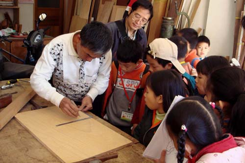
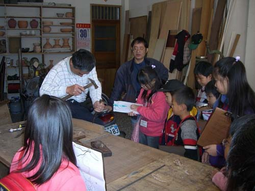

陳先生是埔里台地的第二代傳統木匠， 自幼跟隨父親學習木工技藝，至今已累積數十年的扎實功夫。 他的工坊裡保留了許多傳統木工工具—— 從刨刀、鑿子、墨斗到手拉鋸，每一件都承載著歲月的痕跡 與老一輩匠人的智慧。
在機械化與量產當道的今日，陳先生依然堅持以手工製作 家具與木作製品。他相信，每一塊木頭都有獨特的紋理與個性， 唯有透過雙手細細打磨，才能讓作品展現出最溫潤的質感。
走進他的工坊，撲鼻而來的木頭香氣與滿牆的老工具， 彷彿帶領人們回到那個講究工藝與耐心的美好年代。
陳先生的木工坊 不僅是一處製作家具的場所， 更是埔里台地傳統工藝的活化石。從選料、畫線、鋸切到榫接、打磨、 上漆，每一個步驟都遵循著老一輩傳下來的工法。 那些掛在牆上的老工具——有些甚至已有超過 五十年的歷史——見證了埔里台地木工業的興衰與變遷。 在快速消費的時代裡，陳先生用他的雙手與堅持， 繼續書寫著這塊土地上的匠人精神。
「做木工就像做人，要實在、要耐心，不能偷工減料。」 —— 陳先生